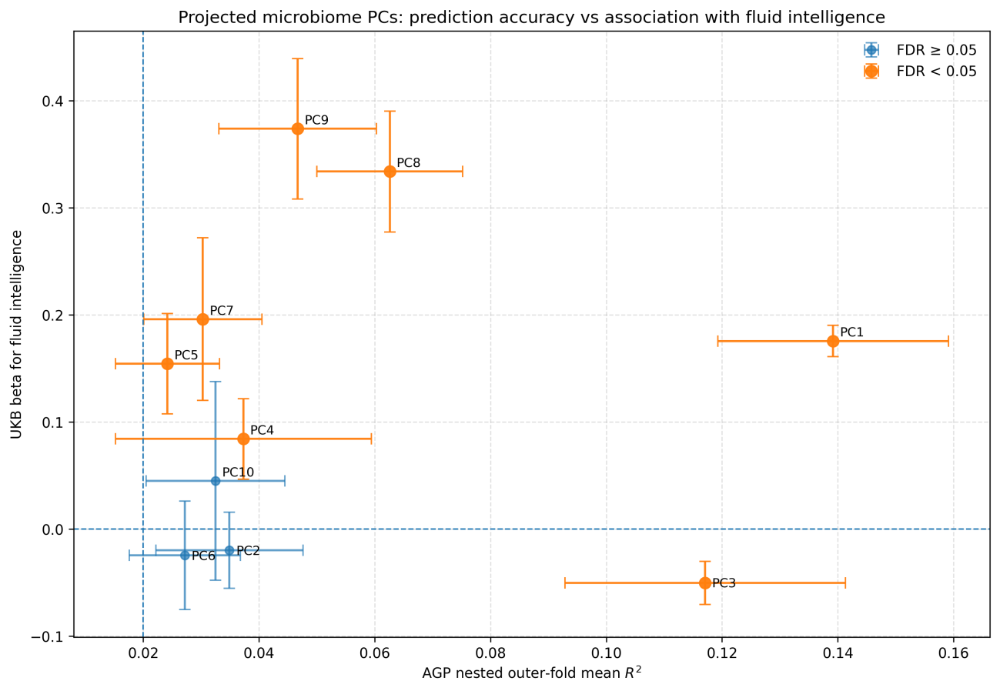

Hongrui Liu / Toronto, Canada
Research &
data analysis.
Real-world questions.
Across health and real-world problems, I bring together quantitative research, practical data work, and a perspective shaped by working with people.
I’m an MSc graduate from the University of Toronto, with a background in mathematics and human biology. My work spans microbiome modelling, computational neuroscience, and tools for community programs.
A closer look at my research

Graduate research · ML-LAMPFrom lifestyle data
From lifestyle data
to microbiome proxies.
Modelling, validation, and interpretation across population datasets.
See the researchAn original figure from my MSc research.
Research foundationUniversity of Toronto & CAMH
Technical toolkitPython / R / MATLAB
Working perspectiveRigorous analysis. Human context.
01 / Selected work
Questions into practice.
Projects connecting research methods,
technical problem-solving, and real needs.
Better structure for tutor–tutee matching.A Python tool for pairing tutors and students around subjects, availability, and preferences.Collapse
Exploring neural systems through simulation.MATLAB models of movement control and numeral recognition for computational neuroscience coursework.Collapse
Deep Learning Lab.Interactive experiments on how neural networks learn, starting with residual connections.Collapse
02 / Professional experience
Working with
people, every day.
Clinical work and teaching have shaped how I explain complex information, adapt to different needs, and collaborate with others.
Toronto Eye Specialists and SurgeonsJun 2022 – Sep 2024
Ophthalmology Medical Technician
Performed OCT imaging, visual-field testing, dilation exams, and pre-consultation assessments. Worked with ophthalmologists, technicians, and administrative staff to support patient flow and communication.
Patient communication · Clinical workflow · Teamwork
MathnasiumJan 2024 – Present
High School Mathematics Tutor
Teach high-school mathematics and problem-solving, adapting explanations to students’ confidence and learning needs. Support preparation for college and university entrance assessments.
Clear explanations · Adaptive teaching · Problem-solving
03 / Leadership & community
A commitment beyond the work.
Connecting technical skills with
service, mentorship, and care.
Saturday Program
Former Co-Director · Ongoing research involvement
Helped lead the University of Toronto Medical Society’s mentorship and tutoring initiative for marginalized high-school students interested in health-care careers. Coordinated recruitment, training, weekly programming, workshops, and program events.
Leadership concluded June 2026. Research involvement continues.
Explore the matching projectHospice Toronto
Hospice Companion · June 2022 – Present
Provide emotional and practical support to patients and families through active listening and companionship in home and facility settings.
A role grounded in presence, attentive listening, and respect for each person’s needs.
04 / Skills in practice
A toolkit connected to real work.
Data & programming
Python · R · MATLAB
Data preparation · Harmonization
Reproducible analysis
Modelling & evaluation
Random forests · PCA
Nested cross-validation
SHAP interpretation
Communication & leadership
Research communication
Teaching · Patient communication
Program coordination
05 / Education & recognition
A quantitative and human foundation.
Master of Science
Institute of Medical Science · University of Toronto
Research at CAMH, Whole Person & Population Modelling Lab.
Supervisor: Daniel Felsky, PhD.
Honours Bachelor of Science
University of Toronto
Double major in Mathematics and Human Biology.
GPA: 3.97 / 4.0.
06 / CV & contact
Let’s start
a conversation.
For conversations about research and data roles,
please get in touch.